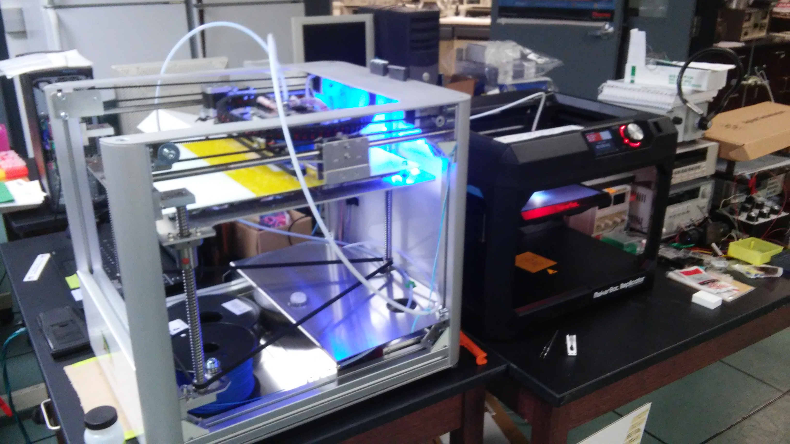

Summer 2016: Norton Lab
Custom stainless steel AFM stage-plate, designed to be heavy to dampen noise.
During June and July of 2016, I worked as a lab assistant at the Marhsall University Molecular and Biological Imaging Center (MU MBIC) for Dr. Mike Norton. I primarily worked with 3D printing parts for use in research. I increased my proficiency with SolidWorks and with ImageJ. I also worked briefly with the Robert C. Byrd Institute to machine a custom stainless steel AFM stage-plate to dampen noise.
At one point during the summer, Dr. Norton mentioned to me that he would like to 3D print AFM scans, so I wrote a program in Python that makes a 3D printable STL file from an AFM scan. I later adapted this to work as a plugin for NIH ImageJ. The plugin takes an AFM image and exports an ASCII STL file suitable for 3D printing. Details about and source code for these projects can be found on my github.
2015 - 2016: Norton Lab
 Leapfrog (left) & Makerbot (right) running in tandem.During June and July of 2015, I worked as a lab assistant at the Marhsall University Molecular and Biological Imaging Center (MU MBIC) for Dr. Mike Norton. My experience has included Scanning Electron Microscopy (SEM), some Atomic Force Microscopy, and some work with DNA origami and gold nanoparticles. Primarily, I worked on designing and 3D printing parts for use in research. I brought the lab's Leapfrog Creatr Dual Extruder into working condition and became proficient in using Solidworks and ImageJ. Later in the summer, the lab acquired a Makerbot Relpicator 5th Generation. The lab also posesses a FormLabs SLA printer which I have never used.
I continued similar work part time through the fall and spring semesters.
2014
During the spring of 2014, I conducted research using SEM studying the wear on oboe reeds due to playing over time. I did this with much help from MU MBIC and Dr. Richard Kravchak, oboist and former director of the MU School of Music and Theatre (now Director of the School of Music at Univ. of Southern Mississippi). I presented a poster on this project at Marshall's Sigma Xi day titled "Wear Analysis of Oboe Reeds with Scanning Electron Microscopy". The poster is displayed below and can also be viewed here.